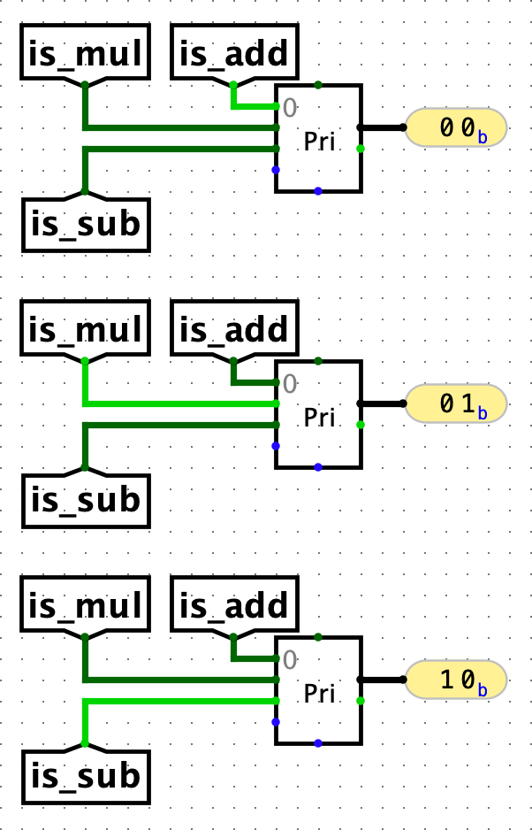

Part B（第二部分）：更多指令
实验6是项目3B的先决条件，强烈建议学习第16-19讲、讨论9-10和作业4-5。
在这一部分中，您将扩展CPU以支持更多指令和流水线。
在开始此部分之前，请运行git pull starter main以下载我们可能推送的任何更改。如果您看到关于"unrelated histories"的错误，请改为运行git fetch starter main-fix && git merge starter/main-fix。
您可以按任何顺序实现指令。本规格按小组指令逐步构建您的CPU。
注意：您的电路不能依赖浮空（未定义）值。虽然测试可能在本地通过，但它会违反Gradescope上的设计规则检查。
任务5：I型指令
根据课程参考卡实现以下基本RV32I I型指令：
addiandiorixorisllisrlisraislti
任务5.1：数据通路
回想您在Part A中已经实现了addi。其他I型指令使用与addi相同的数据通路，只是每个I型指令需要ALU执行不同的操作。
- 在Part A中，我们将ALU子电路的
ALUSel输入硬编码为0b0000，使ALU始终执行加法选择，但现在您应该将ALU子电路的ALUSel输入更改为使用控制逻辑子电路的值（您将在下一个任务中实现）。 - 还要记得将寄存器文件子电路的
RegWEn输入更改为使用控制逻辑子电路的值。
任务5.2：控制逻辑
当您在接下来的任务中添加逻辑以支持更多指令时，您需要添加控制逻辑，根据正在执行的指令启用相关的数据通路组件。
任务：修改control-logic.circ以输出I型指令的正确控制逻辑信号。
控制逻辑子电路接收指令位并输出执行该指令所需的所有控制信号。阅读课程笔记了解详情。
我们建议的方法（"ROM方法"）：
- 在电子表格中构建控制逻辑真值表。
- 将电子表格中的值复制到ROM子电路查找表中。
- 连线优先编码器以选择ROM表的正确行。
- 对
PCSel使用组合逻辑。
您也可以完全使用组合逻辑来实现控制逻辑。这取决于您。
ROM子电路
- 复制此电子表格：[61C SP26] 项目3B ROM控制逻辑。
- 对于每条指令，填写"Control Signals"标题下的电子表格单元格。不要修改其他标题下的任何单元格。见下文。
- 复制"ROM Output"列中的数据（不包括标题）。
- 在Logisim中打开
control-logic.circ，然后点击ROM。 - 在左侧边栏的属性选项卡中，点击"Contents"标签旁边的"(click to edit)"。
- 点击最左上角的数据单元格（将是一组4位十六进制数字，没有前导
0x），然后将之前的值粘贴到ROM中。您应该看到ROM控制位变为电子表格中的值。 - 点击"Close Window"退出ROM编程视图。
电子表格的以下两列会自动为您填充：
- "ROM Input"：这是将传入ROM的值。这是每条指令传入ROM的输入。
- "ROM Output"：这是将从ROM输出的值。此输出是所有控制信号连接在一起的结果。
例如，当传入addi指令时，您的控制逻辑需要将15（0b1111）传入ROM，以便可以选择正确的控制信号条目。
展开以下内容查看填写电子表格时需要注意的事项。
电子表格详情
- 输入不带前导
0b的二进制数字（输入01而不是0b01）。- 如果控制信号单元格的右上角变红，或者当您将鼠标悬停在单元格上时看到警告，则您的单元格内容无效。常见的错误来源包括输入位数过多或过少的控制信号，或在控制逻辑单元格中输入
0或1以外的字符。 - 如果某个控制信号对某条指令是"无关"的，您可以在相应的单元格中放入任何有效值。
- 确保填写给定行中的每个单元格。如果某行有空单元格，ROM输出值是不可靠的（垃圾值）。
- 您可以为控制逻辑使用任何编码（哪些二进制数字对应哪些控制逻辑情况），只要您的编码与您的电路一致即可。例如：
- 假设您选择为将
RegReadData1中的数据输入ALU的指令设置ASel = 0，为将PC输入ALU的指令设置ASel = 1。 - 当您使用
ASel作为选择位制作多路选择器时，输入0应为RegReadData1，输入1应为PC。 - 您也可以使用相反的编码（
ASel = 0对应PC，ASel = 1对应RegReadData1）并翻转多路选择器输入，电路的行为方式仍然相同。
- 假设您选择为将
- 如果控制信号单元格的右上角变红，或者当您将鼠标悬停在单元格上时看到警告，则您的单元格内容无效。常见的错误来源包括输入位数过多或过少的控制信号，或在控制逻辑单元格中输入
ROM输入：使用优先编码器
一旦电子表格准备好了，您需要添加连线来选择给定指令要使用的ROM表行。换句话说，您需要一个能接收指令并输出电子表格中相应"ROM Input"列位的块。
我们建议使用Logisim中的优先编码器块。优先编码器块有多个输入，从零开始索引。该组件确定值高的输入的索引并输出最高索引。例如，如果输入0、2、5和6都为1，则优先编码器输出值110。阅读更多。
优先编码器：另一个示例
考虑一个仅执行3种操作的ALU示例：add（ALUSel=0）、mul（ALUSel=1）、sub（2）。我们想使用优先编码器从三个隧道确定正确的ALUSel信号：is_add、is_mul和is_sub。
要生成ALUSel控制信号，我们可以将is_add、is_mul和is_sub隧道连接到优先编码器上对应的ALUSel位置（add、mul和sub分别对应索引0、1、2）。优先编码器将返回活动输入信号的位置，在这种情况下就是正确的ALUSel值。

注意：如果同时有多个活动信号，优先编码器返回最大的活动位置。但是，您应该尽量避免在此用例中同时有多个活动信号。毕竟，一条指令不能同时要求ALU执行加法和乘法。
测试与调试
提示：要确定输入控制逻辑子电路的指令是什么，可以使用比较器和常量将指令的位与某个固定常量值进行比较。
我们没有为I型指令提供测试，因此您需要编写自己的自定义测试。在向工作人员寻求帮助之前，请确保您已经编写了一些测试，否则我们会要求您先编写一些测试。
任务6：R型指令
根据课程参考卡实现以下基本RV32I R型指令：
addsubandorxorsllsrlsraslt
此外，实现mul、mulh和mulhu通用乘法指令（RISC-V "M"扩展的一部分）。详情请参阅课程笔记。
任务6.1：数据通路
修改cpu.circ中的数据通路，使其能够支持R型指令。
如果您遇到困难，请继续阅读一些指导性问题。与任务4一样，考虑执行指令的五个阶段可能会有帮助。
取指：R型指令如何影响程序计数器？
R型指令总是将程序计数器递增4以获取下一条指令，就像Part A中的addi指令一样。这意味着我们不需要为此任务修改程序计数器实现。
译码：我们需要从寄存器文件中读取什么？
R型指令需要从寄存器文件中读取两个源寄存器（rs1和rs2）的值。在Part A中，您从指令中分出了rs1位并将它们传递给寄存器文件。现在，您还应该从指令中分出rs2位并将它们传递给寄存器文件。
执行：R型指令应该向ALU输入哪两个数据值（A和B）？
R型指令将寄存器文件中的寄存器值传入ALU。在Part A中，您已经将第一个寄存器值RegReadData1传入ALU的第一个输入。但是，对于addi指令，ALU的第二个输入是立即数。由于您想同时支持R型指令和addi指令，您应该使用多路选择器来选择哪个输入将被传入ALU。
此多路选择器的选择位是BSel。您将在本任务稍后的控制逻辑中实现从指令位确定BSel的逻辑。
访存：R型指令是否写入内存？
R型指令不写入内存（它们写入CPU上的寄存器，这与内存不同）。这意味着我们不需要为此任务修改DMEM。
写回：R型指令正在写入什么数据，以及指令将此数据写入哪里？
R型指令取计算结果（来自ALU输出）并将结果写入寄存器rd。在Part A中，您已经实现了将ALU输出写入目标寄存器的逻辑。
任务6.2：控制逻辑
修改control-logic.circ以输出R型指令的正确控制逻辑信号。
测试与调试
您还需要为R型指令编写自定义测试；我们没有提供任何测试。在向工作人员寻求帮助之前，请确保您已经编写了一些测试，否则我们会要求您先编写一些测试。
任务7：B型指令
根据课程参考卡实现以下基本RV32I B型指令：
beqbgebgeubltbltubne
任务7.1：分支比较器
填写branch-comp.circ中的分支比较器子电路。参见课程笔记中分支比较器的输入/输出信号。
我们为分支比较器子电路提供了一些单元测试。这些测试不是全面的。您可以使用bash test.sh test_branch_comp运行这些测试。
任务7.2：立即数生成器
编辑imm-gen.circ中的立即数生成器，使其除了能生成I型指令的立即数（您在Part A中实现的）之外，还能生成B型指令的立即数。
参见课程笔记中立即数生成器的输入/输出信号。您需要使用ImmSel信号（您将在控制逻辑中实现）来确定此子电路应生成哪种类型的立即数。
- 我们建议复习课程笔记中的立即数类型。
测试：
- 我们为立即数生成器子电路提供了一些单元测试，名为
test_imm_gen。这些测试并不全面。 - 请注意，如果您现在只实现生成B型立即数，
test_imm_gen中其他立即数类型的一些测试将失败，但请确保imm-gen-b-type测试通过。
[可选] 自定义ImmSel编码
表中的ImmSel值代表默认编码（ImmSel值到立即数类型的映射）。如果您选择使用不同的编码：
- 导航到
tests/unit-imm-gen。 - 打开
imm-gen-encoding.csv。 - 用您选择的编码（十进制）替换数字。例如，如果您使用
ImmSel = 0b110表示I型指令，第二行应为I,6。 - 使用
bash test.sh test_imm_gen运行单元测试。
任务7.3：数据通路
修改cpu.circ中的数据通路，使其能够支持B型指令。
如果您遇到困难，请继续阅读一些指导性问题。与任务4一样，考虑执行指令的五个阶段可能会有帮助。
取指：B型指令如何影响程序计数器？
回想一下，分支指令将立即数加到PC的当前值上。如果分支被采用，PC将变为此加法的结果。如果分支未被采用，或者指令不是B型指令，则PC变为PC+4（就像之前的任务一样）。我们将在写回阶段实现这一点。
译码：我们需要从寄存器文件中读取什么？
B型指令有两个源寄存器rs1和rs2，我们需要从寄存器文件中读取。在上一个任务中，您已经实现了读取R型指令的rs1和rs2值。
执行：B型指令应该向ALU输入哪两个数据值（A和B）？
B型指令使用ALU将立即数加到PC上。您需要添加一个多路选择器，使ALU可以接收PC或rs1中的值，具体取决于正在执行的指令。此多路选择器的选择位是ASel。在之前的任务中，您已经实现了向ALU发送立即数。
访存：B型指令是否写入内存？
B型指令不写入内存。这意味着我们不需要为此任务修改DMEM。
写回：B型指令正在写入什么数据，以及指令将此数据写入哪里？
B型指令取加法结果（PC + 立即数，来自ALU输出）并可能将结果写入PC（取决于分支是否被采用）。您应该使用多路选择器来选择将哪个值写入PC。
此多路选择器的选择位是PCSel。您将在控制逻辑中实现从指令位确定PCSel的逻辑。
任务7.4：控制逻辑
修改control-logic.circ以输出B型指令的正确控制逻辑信号。
测试与调试
运行test_integration_branch集成测试。按照测试与调试部分中的调试集成测试示例操作。
这些测试并不全面，因此您应该编写自己的自定义测试。
任务8：加载和存储
根据课程参考卡实现以下基本RV32I加载和存储指令：
lblhlwsbshsw
任务8.1：立即数生成器
编辑imm-gen.circ中的立即数生成器，使其除了能生成之前任务中所有指令类型的立即数之外，还能生成S型指令的立即数。详情请参阅之前的立即数生成器任务。
测试：与之前一样，在test_imm_gen中找到一些单元测试，这些测试并不全面。与之前一样，如果您现在只实现生成S型立即数，test_imm_gen中其他立即数类型的一些测试将失败，但请确保imm-gen-s-type测试通过。
任务8.2：部分加载和存储
根据课程笔记中的部分加载和存储部分实现部分加载和存储电路。
任务8.2.1：填写partial_load.circ子电路。
任务8.2.2：填写partial_store.circ子电路。
测试与调试：单元测试为partial_load和partial_store。这些测试并不全面。
任务8.3：数据通路
借助您刚刚制作的部分加载和部分存储电路，修改cpu.circ中的数据通路，使其能够支持加载和存储。
提醒：
- 您应该向DMEM提供地址输入
MemAddress。请记住，ALU通过将rs1寄存器中的地址与偏移立即数相加来计算此地址。 - 您还应该向DMEM提供
MemWriteMask和MemWriteData。这些由您的部分加载和部分存储子电路计算。 - 对于加载指令，您还应该在写回阶段添加功能，使DMEM输出数据（经过部分加载子电路处理）写回到
rd寄存器。
任务8.4：控制逻辑
修改control-logic.circ以输出加载和存储指令的正确控制逻辑信号。
测试与调试
您需要编写自己的自定义测试。在向工作人员寻求帮助之前，请确保您已经编写了一些测试，否则我们会要求您先编写一些测试。
在test_integration_mem中，我们为加载和存储指令提供了一些测试，但它们需要先实现lui。
任务9：跳转和U型指令
根据课程参考卡实现以下基本RV32I U型和跳转指令：
jaljalrauipclui
任务9.1：立即数生成器
编辑imm-gen.circ中的立即数生成器，使其能够生成U型和J型指令的立即数。详情请参阅之前的立即数生成器任务。
测试：与之前一样，在test_imm_gen中找到一些单元测试，这些测试并不全面。
任务9.2：数据通路
修改cpu.circ中的数据通路，使其能够支持这些指令。到目前为止，您的大多数指令已经得到数据通路的支持。
提醒：
- 请注意，U型指令需要将立即数左移12位（例如，
lui在参考卡上写为rd = imm << 12），但这应该已经由您的立即数生成器完成，因此您的数据通路不需要执行任何额外的移位。 - 要支持
jalr，您应该在写回阶段将PC+4连接到多路选择器，以便PC+4可以写回到rd。
任务9.3：控制逻辑
修改control-logic.circ以输出跳转和U型指令的正确控制逻辑信号。
提示：请注意lui指令执行的ALU操作。您在Part A中制作但没有在其他地方使用的ALU操作之一在这里会派上用场。
测试与调试
我们为跳转指令和lui（但不包括auipc）提供了一些测试：test_integration_jump和test_integration_lui。这些测试并不全面，因此您应该编写自己的自定义测试。
任务10：流水线
警告：在完成任务1-9之前，不要继续此任务。
在此任务中，您将在CPU中实现2级流水线：
- 取指：从指令内存中获取一条指令。
- 执行：指令被译码、执行并提交（写回）。这是经典五级RISC-V流水线中其余四个阶段（ID、EX、MEM和WB）的组合。
两个流水线阶段之间的分隔（由数据通路上的绿色分界线突出显示）如下图所示。

任务10.1：入门
首先，考虑哪些路径中会有中间流水线寄存器。查看上面提供的图示，考虑所有与分界线相交的路径。将数据传输到数据通路其余部分的路径（从左到右的数据）将有相应的流水线寄存器，而反馈路径（从右到左的数据）则不会有。
考虑流水线两个阶段之间哪些值现在不同了。例如，阶段1和阶段2会有相同还是不同的PC值？如果阶段需要不同的PC，那么您现在需要在电路中的任何给定时间步有两个不同的PC值。
一旦您列出了阶段之间不同的值（提示：不多），您需要在流水线阶段之间存储这些值。
最后，检查整个电路，确保对于阶段之间不同的任何值，您指定了要使用哪个阶段的值。例如，如果阶段需要不同的PC，那么每当您在电路中使用PC时，您应该指定是要使用阶段1的PC还是阶段2的PC。
注意：在第一个周期中，位于流水线阶段之间的指令寄存器不会包含从内存加载的指令。第二阶段应该做什么？幸运的是，Logisim在重置时自动将寄存器设置为零，因此指令流水线寄存器将自动以空操作开始！如果您愿意，可以依赖Logisim的此行为。
任务10.2：冒险
由于您的CPU将支持分支和跳转指令，您需要处理分支时发生的控制冒险。
如果分支被采用，分支或跳转之后紧邻的指令不应被执行。当您将分支/跳转指令发送到阶段2时，阶段1已经获取了（可能）错误的下一条指令。因此，您需要通过用空操作替换阶段1中获取的指令来冲刷它。只有当阶段2指令中的分支被采用时，您才应冲刷阶段1的指令（如果未被采用则不冲刷）。当阶段2的指令是跳转时，您应始终冲刷阶段1的指令。
提示：其中一个控制逻辑信号会告诉您分支或跳转是否被采用。您可以在阶段1逻辑中使用此控制逻辑信号（来自阶段2）来确定何时需要冲刷流水线。
要冲刷指令，您的阶段1逻辑应该将空操作指令发送到阶段2，而不是使用获取的指令。您可以使用addi x0, x0, 0（0x00000013）作为空操作。
还有一些需要考虑的事项：
- 要将空操作多路选择到阶段2，您应该将其放在指令寄存器之前还是之后？
- 当EX阶段执行空操作时，下一个应该请求什么地址？这与正常情况不同吗？
测试与调试
在测试命令中添加--pipelined或-p标志，以在流水线CPU上运行之前任务的测试。例如：
请注意，您的流水线CPU将不再通过非流水线测试（即如果您运行不带-p的测试，它们将失败）。
任务11：合作伙伴/反馈表
恭喜您完成项目！我们很希望听到您对未来学期改进的反馈。
请填写此简短表单，您可以在其中提供对项目的想法和（如适用）您的合作伙伴关系的反馈。您提供的任何反馈都不会影响您的成绩，因此请放心提供诚实和建设性的意见。
提交与评分
将您的作业提交到Gradescope上的Project 3B提交。Part B占项目3总成绩的80%。
- 指令（每条1.5分，共54分）
- 集成测试（每个2分，共24分）
- 反馈表单（2分）
总计：80分